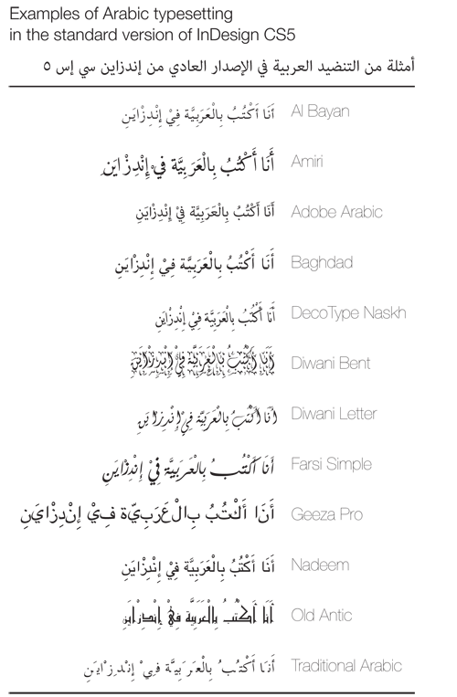

World-Ready Composer not Perfect
Although Adobe has included the world-ready composer in InDesign CS4 and 5, like I said in my previous post, it’s not documented or supported at all. It’s still buggy and unfinished, unfortunately.
Here’s a little example of how buggy it really is. I typeset the same sentence in Arabic in different fonts I have installed on my computer. As you can see, most of the fonts work flawlessly (yay!), with two exceptions. Traditional Arabic can’t display short vowels—they break up the connecting letters—and Geeza Pro is a sad, sad little font.

I don’t know if this is a problem with the fonts themselves or with the composer. Traditional Arabic was specially designed for Office 2007 to be a high quality Arabic font, and it comes with thousands of extra glyphs for every position possible, so it would seem like it should be able to display correctly. Just kidding. Arabic Typesetting is the special Office 2007 font and it works just fine (it has a nice Naskh-y feel to it). Traditional Arabic has been included with Windows since Windows 2000 and apparently isn’t very well made (?). Or maybe the composer is just buggy (?).
Geeza Pro, on the other hand, definitely has a problem with the font itself. One dead forum (formerly at http://forum.redlers.com/viewtopic.php?f=1&t=2180) says that the version of Geeza Pro in Snow Leopard is faulty and doesn’t connect. Hopefully Lion fixes that…